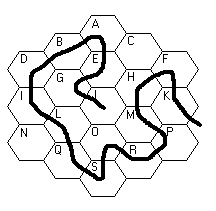
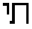

|
Spookiness
Rating: 0
|

Ththththey think they can hold me!!! Ha!!! They say that I am crazy! It is not I who am crazy...it is I who am mad! They think that there's no way out, but I'll show them! The room numbers--why can't they see that it's the numbers! The numbers shall set me free!
| A | The number of major arcana in a tarot deck |
| B | In Monopoly, the rent on Baltic Avenue with no houses, no hotels, and non-ownership of Mediterranean Avenue |
| C | The number of digits of pi enumerated, after the decimal point, in a classic MIT cheer beginning with the phrase "e to the x, du/dx" |
| D | Number of commandments brought down by Moses, at first, in the movie "History of the World, Part I" |
| E | Number of runs claimed by Casey Jones after bashing Raphael in the head with a cricket bat, in the movie "Teenage Mutant Ninja Turtles" |
| F | Number of movies originally planned to be made, by George Lucas, in the Star Wars series |
| G | The century in which the accordion was invented, expressed in its usual ordinal fashion |
| H | According to the TV series title, it's the number of "Ghosts of Scooby-Doo" |
| I | The exponent in the private name of Judiciary Pag, L.I.V.R. |
| J | WPIX-TV |
| K | The absolute difference between the ostensible and actual number of members of the band who performs "One Angry Dwarf and 200 Solemn Faces" |
| L | According to Schoolhouse Rock, it's a magic number |
| M | The number of two-cent stamps in a dozen |
| N | The number of cards which one player attempts to cut off of the top of the deck at the beginning of a game of Six-Deck Bezique |
| O | The number of words in the title of Sean and Marlon Wayans's spoof of inner-city, Spike Lee "Do The Right Thing"-type movies |
| P | The network that Edison Carter works for |
| Q | The number of vertices on a dodecahedron |
| R | The number of times the phrase "Boy in the Bubble" is mentioned in the lyrics of the Paul Simon song "Boy in the Bubble" |
| S | The number associated with  |